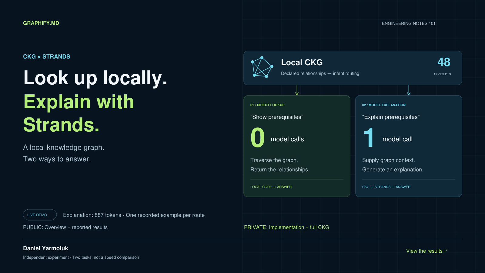

DIRECT LOOKUP
“Show prerequisites
of thread_id”
0 model calls
0.109 ms of local request processing.
Return the declared relationships directly.
INDEPENDENT EXPERIMENT / 01
A local knowledge graph for declared relationships.
An optional model call for an explanation.
Public overview · Private implementation and graph

RECORDED DEMONSTRATION / SEPTEMBER 22, 2026
DIRECT LOOKUP
0 model calls
0.109 ms of local request processing.
Return the declared relationships directly.
STRANDS EXPLANATION
1 model call
887 tokens · 7.064 seconds.
Supply graph context and generate prose.
One example per route, using a 48-concept fixture. Different tasks, not a speed comparison. Graph loading took 0.670 ms separately; request times exclude Python startup and printing. The generated explanation added claims beyond the supplied evidence.
Read the measurement summary and limitations ↗THE DESIGN LESSON
An earlier selective-context extension used fewer tokens but took longer because fallback tool calls added model round trips. The combined approach returns supported lookups directly and provides evidence before an explanation call.
This demonstrates a working integration and routing boundary. Broader accuracy and latency benefits still need equivalent-task evaluation.
PROJECT SCOPE
This showcase contains the presentation and aggregate measurements. Implementation code, full knowledge graphs, extraction methods, and raw execution traces are not distributed here.
Read the project overview ↗